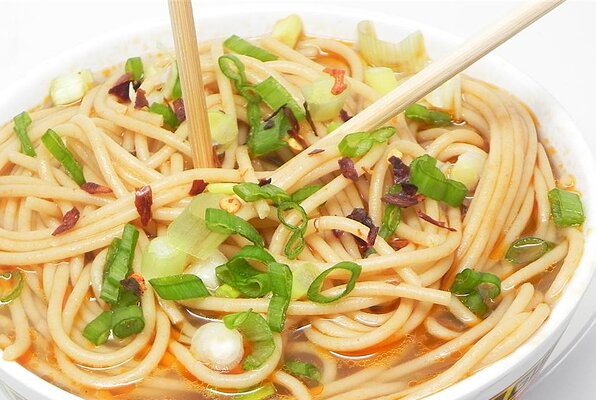

Ramen Noodles Recipe

Description
The recipe involves one simple instructions.
Ramen is a Japanese noodle soup. It consists of Chinese-style wheat noodles served in a meat or (occasionally) fish-based broth, often flavored with soy sauce or miso, and uses toppings such as sliced pork (叉焼, chāshū), nori (dried seaweed), menma, and scallions.
Ingredients
- 4 cups vegetable broth
- 4 cups water
- 1 tablespoon soy sauce
- 1 tablespoon sesame oil
- 1 tablespoon ground ginger
- 1 tablespoon Sriracha hot sauce
- 9 ounces soba noodles
Steps
- Combine broth, water, soy sauce, sesame oil, ginger, and hot sauce in a pot; bring to a boil. Add noodles to boiling broth mixture and cook until noodles are tender yet firm to the bite, 5 to 7 minutes. Transfer noodles to serving bowls and top with desired amount of broth.